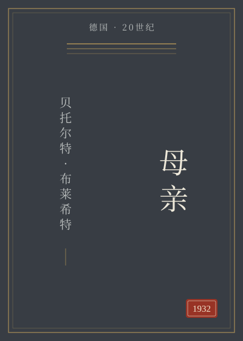
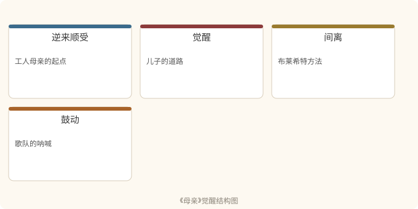

母亲（布莱希特）
一、基本信息
| 作者 | 布莱希特 |
|---|---|
| 成书/出版 | 1932年（作者页 B138 口径：母亲（1932）——取材高尔基同名小说说，通说待核） Bertolt Brecht — Encyclopaedia Britannica（百科全书） |
| 国别/地区 | 德国 |
| 时代 | 现当代 · 20世纪 |
| 体裁 | 戏剧 |
| 语言 | 德语 |

《母亲》觉醒结构图（主题·结构图）
二、创作背景
作者页（B138）：布莱希特 major_works 载'母亲（1932）'（B138 作者页定位，详见 sanfenqian 条核对）。
取材（B259 语境）：高尔基《母亲》1926年曾被普多夫金拍成默片、1930—31年被布莱希特搬上舞台（B259 记载布莱希特 dramatized by Bertolt Brecht in Die Mutter (1930–31)）——本剧为其戏剧化成果。
三、内容脉络
母亲佩拉格娅·弗拉索娃从逆来顺受到革命者的转变（取材高尔基小说——通说待核）。
四、主要人物表
| 人物 | 身份 | 说明 |
|---|---|---|
| 母亲（弗拉索娃） | 工人母亲 | （取材高尔基《母亲》——B259 语境） |
五、主题与艺术特点
- 社会主义现实主义题材的'间离'化（通说待核）。
- 母亲的觉醒（通说）。
- 歌队的鼓动（通说待核）。
六、影响与评论
- Britannica（B259）：布莱希特将高尔基《母亲》戏剧化——Die Mutter (1930–31)。
Maxim Gorky — Encyclopaedia Britannica（百科全书） - 作者页：布莱希特戏剧谱系（B138 作者页口径）。
Bertolt Brecht — Encyclopaedia Britannica（百科全书）
七、阅读建议
难点
- 与高尔基小说的对照。
- 鼓动剧的节奏。
- 《布莱希特戏剧选》（人民文学出版社，通说待核）。
- 德文原版（Suhrkamp）。
对照高尔基《母亲》。
八、待核实
- 1932年柏林首演说核对。
- 母亲人名（佩拉格娅·弗拉索娃说）核对。
- 与高尔基原著的改编差异待核。
本页主要来源
布莱希特的其他收录作品：三分钱歌剧